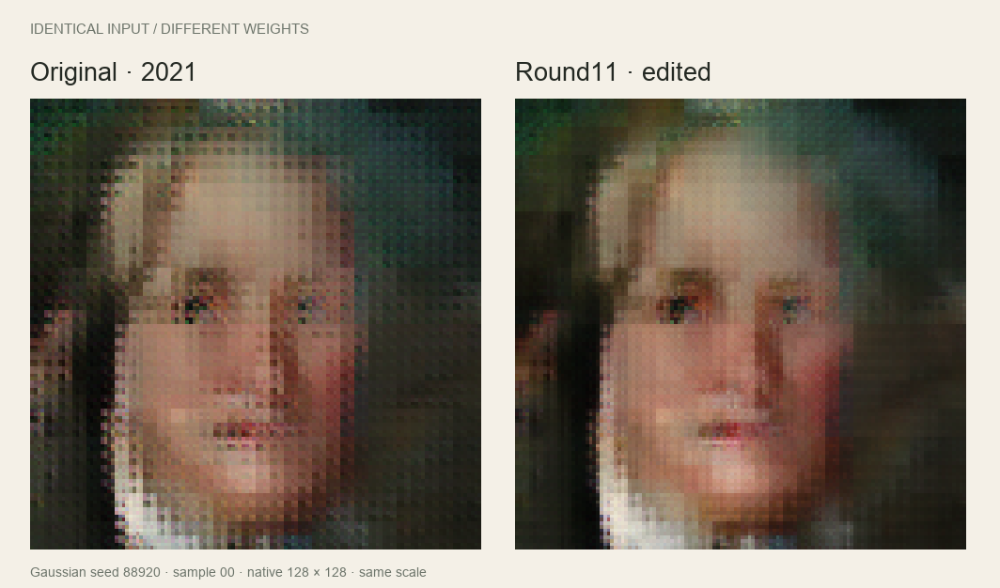
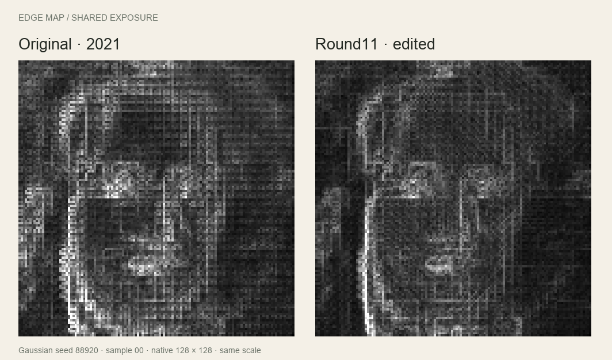

Field notes / machine learning / November 5, 2026
An old model,
revisited.
Programming the weights of a five-year-old portrait GAN.
In 2021, I put a small portrait generator behind a Go web server. This week I came back to the same TFLite file with a different question: could we make it better by changing the weights directly?
Compare the models yourself →
Back to the little GAN
My original post was about getting a TensorFlow Lite model running outside the comfortable Python world: Go, cgo, some prebuilt libraries, and a tiny HTTP server. The model was an experiment I had trained on MetFaces. It made recognizably painted portraits. It also made a lot of strange faces, recurring compositions, and a very particular grid-like texture.
The file in this experiment is byte-for-byte the one still in that repository. The original stays there. All of the edits are separate artifacts.
The prompt for this revisit was Sparks of Weight-Space Programming, by Rikiya Takehi, Jayden Teoh, Alex Zhang, and Omar Khattab. Their work asks what language models can do by directly reading and writing neural-network weights. I wanted to try a small, concrete version of that idea on something I already had.
I worked with a coding assistant to inspect the serialized graph, run controlled probes, write analytical weight transformations, and compare the outputs. No training loop, no optimizer, no gradients, and no new image dataset. There was feedback: we generated samples, measured them, and chose among finite sets of edit strengths. “No retraining” does not mean “no experiments.”
What was actually in the file?
The model takes 512 floating-point numbers and produces a 128 × 128 RGB image. It has ten transposed convolutions, leaky-ReLU hidden activations, and a sigmoid at the end. There is no prompt, class label, or explicit control for head direction.
Two things stood out. First, the initial 5 × 5 kernel had a lot of unreachable weights: with a 1 × 1 input and this padding, only its central 2 × 2 positions contributed. We could remove that unused storage and rewrite the live computation without deliberately changing its output. That helped shrink a 74.22 MB file to a compact graph of roughly 31.5 MB. The final edited model is 32.07 MB. Compression itself is not an image-quality improvement.
Second, five upsampling stages used 2 × 2 kernels with stride 2. They wrote adjacent little patches without overlap. The final three layers were 1 × 1 color transformations, so they could not mix neighboring pixels. That was a useful place to look for the mesh.
The early edits—and the things that did not work
We started by gently rebalancing the dominant latent directions in the first layer and correcting differences between subpixel phase responses. Those changes reduced some periodic texture and improved some local repetition measurements. Broader diversity results were mixed. I would not describe the result as a model that suddenly knows more identities.
We also made exact horizontal-mirror variants. A mirror changes which way a portrait appears to face; it does not teach a new viewpoint. The browser comparison keeps both outputs in the same orientation.
Several attempts at sharpening made the grid worse. Averaging phase weights could soften fine texture while making patch boundaries more conspicuous. A weak final spatial filter lowered absolute texture energy, but the repeating edge pattern could become stronger relative to the remaining edges. That was the clue that “less high-frequency energy” was too easy a target.
Look at the edges
The next diagnostic measured horizontal and vertical RGB differences, then grouped edge positions by their coordinates modulo 2, 4, 8, and 16. A grid shows up when certain positions repeatedly carry stronger edges.
For the main edge score, we divided the variation between those phase groups by mean edge magnitude, then averaged the 2-, 4-, and 8-pixel results. Simply dimming every edge cannot improve that normalized score. We kept a separate per-image brightness-pattern measure, plus checks on broad edges, color drift, clipping, and coarse shape variation.

This fits the architectural concerns described by Odena, Dumoulin, and Olah: phase-dependent learned filters can create checkerboard artifacts even when the stride divides the kernel size. Their work motivated the investigation. The actual evidence for this model comes from our paired interventions.
Give neighboring patches a little overlap
The useful change was to replace the final phase projection with an overlapping one, initialized from the weights already there. We separated two knobs: continuity of the shared spatial component, and the strength of phase-specific differences.
Let Wₚ be one of the four pixel-shuffle phase projections, M their mean, and δ a center-only 3 × 3 kernel. Let Bₚ be the half-pixel bilinear kernel for that phase. Then:
W′ₚ = (Wₚ − b(Wₚ − M))δ + aM(Bₚ − δ)
M = mean of the four phase projections
a = overlap of the shared component
b = attenuation of phase differencesAt zero strength, we recover the old projection. At a = b = 1, we get bilinear interpolation of the phase-mean projection. Because the interpolation taps sum to one, the mean response across phases is preserved for constant spatial input. The nonlinear generator still needs output checks; that identity alone does not guarantee unchanged color or structure.
The broad round10 experiment tested 23 configurations, including ordinary smoothing controls and changes at different resolutions. It pointed to the final 64 → 128 upsampler. A narrower round11 tested 16 combinations on fresh development inputs. Only a = 0.5, b = 0.2 passed every preset check on both noise distributions. We froze that choice before running the final holdout.
The export folds the operation into a 3 × 3 projection plus edge padding. Only that projection tensor changes relative to round9. It adds about 0.52 MB. This is a change inside the generator, before the final color layers.
What improved?
Here are the cumulative results for the original model versus the frozen round11 model, evaluated with identical inputs. There are 256 Gaussian and 256 uniform [−1,1] samples; the seeds are 89202 and 89203.
| Measurement | Gaussian | Uniform [−1,1] |
|---|---|---|
| Normalized edge-grid score | −32.7% | −26.7% |
| Per-image brightness phase4 RMS | −73.6% | −69.0% |
| Broad-edge energy | −0.5% | +3.6% |
Those are artifact and structure proxies. They are not percentages of “better art,” and more edge energy does not establish more real detail.
The final round11 step, measured separately against round9, reduced the normalized edge-grid score by about 30% and the brightness-pattern measure by about 23%. It also reduced broad-edge energy by 3.9–4.4% and raw-edge energy by roughly 18%. There is visible softening. Both holdout distributions passed the preset checks, but the texture is reduced rather than eliminated.
Re-reading the old Go source turned up another detail: its demo sampled uniform noise from 0 to 1 and randomly flipped the output. That is a different sampling setup from the main experiments here. We therefore added a post-selection audit of 256 fresh uniform [0,1] inputs, seed 89304. The frozen model reduced the edge-grid score by 29.3% and brightness phase4 RMS by 79.2% relative to the original. We did not use this extra audit to choose new weights. The live demo exposes all three noise settings.
The failures belong in the demo
The saved gallery contains the first eight Gaussian samples from seed 88920 and the first eight uniform [−1,1] samples from seed 88921. Nothing was screened out. Some portraits are charming. Some are still a mess. Gaussian samples 05 and 07 are particularly good reminders of what this experiment did not solve.
We did not recover a training dataset, add semantic knowledge, fix facial anatomy, or establish new identity coverage. A separately exported 256px version is analytical interpolation of a native 128px image. The comparison app displays both models at their native resolution, enlarged by the same amount.
Run both models in the browser
The new app starts with the saved pairs so the comparison is immediate. Live mode downloads the original and round11 TFLite files, chooses two noise endpoints, and walks between them. Every intermediate vector goes into both models. A pair is displayed only when both outputs are ready. Finished images are never crossfaded.
Gaussian paths interpolate directions on the sphere and interpolate endpoint radii; the uniform modes use linear paths to stay within their input ranges. After a short hold at the endpoint, the walk picks a new destination and continues.
The runtime is a small custom FlatBuffer evaluator with WebGL2 and a JavaScript CPU fallback. It executes the serialized graph; it is not Google's LiteRT runtime. GPU execution is enabled only after a numerical comparison with the CPU evaluator. CPU inference and the paired-worker protocol were checked against Python reference outputs. Native LiteRT acceptance and actual browser/GPU behavior remain unverified in the build environment. The CPU fallback is slow, and the download is about 106 MB.
Or clone the repository, run python3 -m http.server 8000, and open http://localhost:8000/web/. Inference happens on the visitor's device.
What I am taking away
This was a useful way to revisit an imperfect old model. We could inspect its computation, make limited changes with a mathematical explanation, and check their consequences without retraining it. We also found plenty of ways to make it worse.
The satisfying part is that the experiment is inspectable. There is an untouched original file, a separate edited file, exact noise inputs, failed candidates, frozen selections, and measurements with stated limitations. The side-by-side view makes the tradeoff much easier to judge than a single attractive output would.
I still would not call this a great portrait model. I do like that it has become a more interesting little program.
Written with a coding assistant; experiments and claims are backed by saved model outputs and numerical checks. Evaluation records · Method and reproduction code · Weight-space programming inspiration.